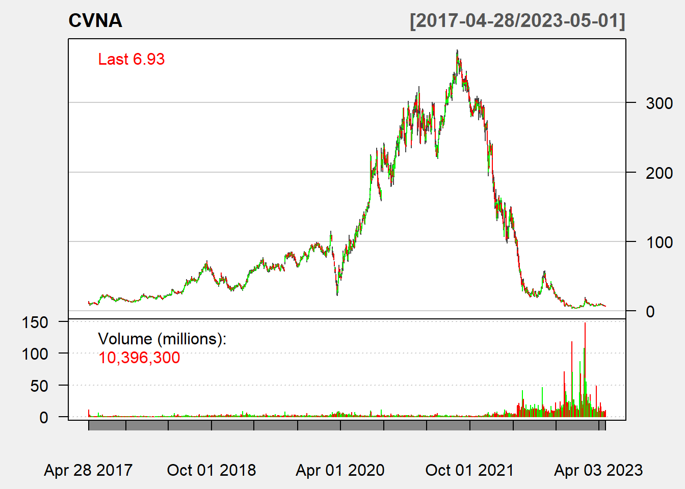
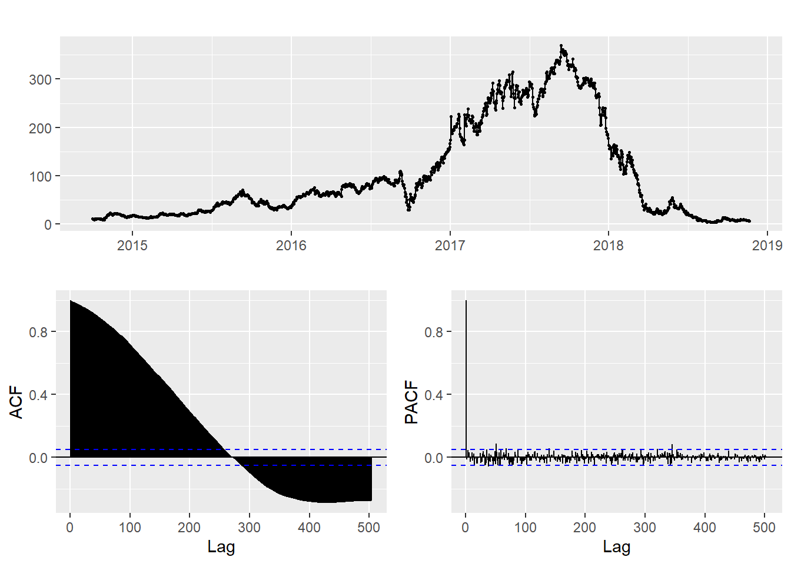

Financial Time Series Models (ARCH/GARCH)
Carvana Model Fitting with ARIMA and GARCH
Since my project has exactly nothing to do with financial time series data (which was not a requirement when choosing projects) I will instead focus on a completely random topic because that’s what the professor told me to do. So fun and worthwhile!
First, let’s get the stock data for our favorite company Carvana! After getting the data, we plot to see what we are working with.
CVNA = getSymbols("CVNA",auto.assign = FALSE, from = "2014-10-01",src="yahoo")
chartSeries(CVNA, theme = chartTheme("white"),
bar.type = "hlc",
up.col = "green",
dn.col = "red")
log(CVNA$`CVNA.Adjusted`) %>% diff() %>% chartSeries()
Based on the data, it would be wise to take the logarithm since the values are highly skewed from when the stock was doing well and when it was doing poorly.
Stationarity
As with most ARCH/GARCH models, we will be modelling the returns rather than the raw data. This is partly why we took the logarithm, so that the returns are on a more reasonable scale from different time periods of the stock.
cvna = ts(CVNA$`CVNA.Adjusted`, start=decimal_date(as.Date("2014-10-01")), frequency = 365.25)autoplot(cvna) +ggtitle("Carvana Price")cvna %>% ggtsdisplay()
Plotting the raw data, we can see that this series is clearly not stationary. There is extremely high correlation between values as well as string seasonality present in the data. Thus, to address the non-stationarity, we will need to do differencing. In addition to differencing, we will also need to calculate the logarithm of the data to account for large variations in price that occurred over the time frame of interest.
returns = log(cvna) %>% diff()
returns %>% ggtsdisplay()
Based on the ACF plot, we can see that after taking the log and differenc of the data, this series is now weakly stationary. There is no need for additional differencing as the ACF and PACF plots are looking good already. Any extra differencing would result in over-differencing and would make modeling more difficult.
GARCH(p,q) model fitting with ARIMA
ArchTest
First, we check for ARCH effects with the ArchTest() function. We will use a standard significance level of \(\alpha=0.05\) for our null hypothesis test. Because the p-value is much smaller than 0.05, so we reject the null hypothesis and conclude the presence of ARCH(1) effects.
ArchTest(returns, lags=1, demean=TRUE)
ARCH LM-test; Null hypothesis: no ARCH effects
data: returns
Chi-squared = 50.596, df = 1, p-value = 1.135e-12ARIMA model
Let’s fit the ARIMA model first. We follow the same procedure as previously. For more on ARIMA models, check out the other tabs of the website.
ARIMA.f=function(p1,p2,q1,q2,data){
temp=c()
i=1
temp= data.frame()
ls=matrix(rep(NA,6*24),nrow=24)
for (p in p1:p2){
for(q in q1:q2){
if(p+1+q<=8){
model= Arima(data,order=c(p,1,q))
ls[i,]= c(p,1,q,model$aic,model$bic,model$aicc)
i=i+1
}
}
}
temp= as.data.frame(ls)
names(temp)= c("p","d","q","AIC","BIC","AICc")
temp
}output = ARIMA.f(0,4,0,4,data=log(cvna))
output p d q AIC BIC AICc
1 0 1 0 -4029.563 -4024.244 -4029.561
2 0 1 1 -4029.215 -4018.576 -4029.207
3 0 1 2 -4027.552 -4011.592 -4027.536
4 0 1 3 -4026.393 -4005.113 -4026.366
5 0 1 4 -4027.981 -4001.382 -4027.941
6 1 1 0 -4029.258 -4018.618 -4029.250
7 1 1 1 -4027.303 -4011.343 -4027.287
8 1 1 2 -4025.635 -4004.355 -4025.608
9 1 1 3 -4025.688 -3999.089 -4025.648
10 1 1 4 -4026.002 -3994.083 -4025.946
11 2 1 0 -4027.454 -4011.494 -4027.438
12 2 1 1 -4025.262 -4003.983 -4025.236
13 2 1 2 -4034.277 -4007.678 -4034.237
14 2 1 3 -4026.394 -3994.475 -4026.338
15 2 1 4 -4024.224 -3986.985 -4024.149
16 3 1 0 -4026.635 -4005.355 -4026.608
17 3 1 1 -4026.035 -3999.436 -4025.995
18 3 1 2 -4024.603 -3992.684 -4024.547
19 3 1 3 -4022.766 -3985.527 -4022.691
20 3 1 4 -4022.240 -3979.681 -4022.144
21 4 1 0 -4028.141 -4001.541 -4028.101
22 4 1 1 -4026.153 -3994.233 -4026.097
23 4 1 2 -4024.293 -3987.054 -4024.219
24 4 1 3 -4022.402 -3979.843 -4022.306ARIMA(2,1,2)
auto.arima(log(cvna))Series: log(cvna)
ARIMA(5,2,0)
Coefficients:
ar1 ar2 ar3 ar4 ar5
-0.7921 -0.6080 -0.4742 -0.3629 -0.1890
s.e. 0.0253 0.0311 0.0327 0.0312 0.0254
sigma^2 = 0.004752: log likelihood = 1896.75
AIC=-3781.5 AICc=-3781.44 BIC=-3749.58Using the auto.arima function, we can see the the best model is the ARIMA(5,2,0). But the ACF and PACF does not suggest these are good values. Since the auto arima function is sometimes un-trsutworthy, I am still going to go with the (2,1,2) ARIMA as determined by the manual arima model selection.
model_output <- capture.output(Arima(cvna, order=c(2,1,2),include.drift = TRUE))Using the standardized residuals plots, we can see that the ARIMA model is insufficient to accurately model the financial time series data. Thus, we will need to use the GARCH model on top of the residuals from the ARIMA model. This is a common tactic in financial time series which has a much different pattern than other time series like the greenhouse gases for the remainder of the project. Thus, we will continue modeling with the GARCH model. I choice the GARCH values based on the ACF graph, of the ARIMA mode. As we can see from this chart, we should try all p,q values between 0 and 4.
GARCH model
Next, we will fit the ARIMA model and then fit a GARCH model to the residuals of the ARIMA model.
data=log(cvna)
arima.fit=Arima(data,order=c(2,1,2),include.drift = TRUE)
arima.res=arima.fit$residuals
acf(arima.res)
acf(arima.res^2) # clear correlation 1,2,4
pacf(arima.res^2) # clear correlation 1,4
model = list()
cc = 1
for (p in 1:4) {
for (q in 1:4) {
model[[cc]] = garch(arima.res,order=c(q,p),trace=F)
cc = cc + 1
}
}
## get AIC values for model evaluation
GARCH_AIC = sapply(model, AIC) ## model with lowest AIC is the best
which(GARCH_AIC == min(GARCH_AIC))[1] 2model[[which(GARCH_AIC == min(GARCH_AIC))]]
Call:
garch(x = arima.res, order = c(q, p), trace = F)
Coefficient(s):
a0 a1 b1 b2
1.774e-05 8.952e-02 3.755e-01 5.358e-01 After trying all p,q values from 0,4 in combination, the GARCH(1,2) model is the best and has the lowest combination of AIC and BIC models. I tested all of the models, but only included the output from the best one. I attempted to use cross validation but was unsuccessful in making comparisons between the different models.
summary(garchFit(~garch(1,2), arima.res,trace = F))
Title:
GARCH Modelling
Call:
garchFit(formula = ~garch(1, 2), data = arima.res, trace = F)
Mean and Variance Equation:
data ~ garch(1, 2)
<environment: 0x000001971d76a758>
[data = arima.res]
Conditional Distribution:
norm
Coefficient(s):
mu omega alpha1 beta1 beta2
3.2701e-04 1.7583e-05 8.9457e-02 3.7710e-01 5.3440e-01
Std. Errors:
based on Hessian
Error Analysis:
Estimate Std. Error t value Pr(>|t|)
mu 3.270e-04 1.106e-03 0.296 0.76749
omega 1.758e-05 8.715e-06 2.018 0.04363 *
alpha1 8.946e-02 1.522e-02 5.876 4.19e-09 ***
beta1 3.771e-01 1.453e-01 2.595 0.00946 **
beta2 5.344e-01 1.372e-01 3.896 9.79e-05 ***
---
Signif. codes: 0 '***' 0.001 '**' 0.01 '*' 0.05 '.' 0.1 ' ' 1
Log Likelihood:
2310.996 normalized: 1.529448
Description:
Mon May 1 12:44:34 2023 by user: sleblanc
Standardised Residuals Tests:
Statistic p-Value
Jarque-Bera Test R Chi^2 1408.668 0
Shapiro-Wilk Test R W 0.9548206 0
Ljung-Box Test R Q(10) 12.31858 0.2643006
Ljung-Box Test R Q(15) 19.50652 0.1916912
Ljung-Box Test R Q(20) 20.63407 0.4189453
Ljung-Box Test R^2 Q(10) 6.022325 0.8133841
Ljung-Box Test R^2 Q(15) 9.940587 0.8234604
Ljung-Box Test R^2 Q(20) 11.10935 0.9433373
LM Arch Test R TR^2 8.351932 0.757059
Information Criterion Statistics:
AIC BIC SIC HQIC
-3.052277 -3.034671 -3.052299 -3.045721 Since all the models has similar AIC ,BIC values, I would go with GARCH(1,1) which all the coefficients are significant.
Final Model
The final model has a decent but not great fir for the Carvana stock return data. All of the errors except for mu are significant but the Ljung-Box statistics are well over the standard threshold. Since there is a mix of indicators, this tells us that the model is decent but not quantifiable better than the simpler ARIMA model. Thus, in this case I would rely on the ARIMA since it is a simpler specification.
arima.fit=Arima(data,order=c(2,1,2),include.drift = TRUE)
summary(arima.fit)Series: data
ARIMA(2,1,2) with drift
Coefficients:
ar1 ar2 ma1 ma2 drift
0.8796 -0.9659 -0.8770 0.987 -0.0003
s.e. 0.0116 0.0193 0.0078 0.014 0.0017
sigma^2 = 0.004033: log likelihood = 2022.16
AIC=-4032.33 AICc=-4032.27 BIC=-4000.41
Training set error measures:
ME RMSE MAE MPE MAPE MASE
Training set 3.270138e-05 0.06337709 0.04147109 -0.03123005 1.238118 0.02851845
ACF1
Training set 0.02665098final.fit = garchFit(~garch(1,2), arima.res,trace = F)
summary(final.fit)
Title:
GARCH Modelling
Call:
garchFit(formula = ~garch(1, 2), data = arima.res, trace = F)
Mean and Variance Equation:
data ~ garch(1, 2)
<environment: 0x000001971f6ebfb0>
[data = arima.res]
Conditional Distribution:
norm
Coefficient(s):
mu omega alpha1 beta1 beta2
3.2701e-04 1.7583e-05 8.9457e-02 3.7710e-01 5.3440e-01
Std. Errors:
based on Hessian
Error Analysis:
Estimate Std. Error t value Pr(>|t|)
mu 3.270e-04 1.106e-03 0.296 0.76749
omega 1.758e-05 8.715e-06 2.018 0.04363 *
alpha1 8.946e-02 1.522e-02 5.876 4.19e-09 ***
beta1 3.771e-01 1.453e-01 2.595 0.00946 **
beta2 5.344e-01 1.372e-01 3.896 9.79e-05 ***
---
Signif. codes: 0 '***' 0.001 '**' 0.01 '*' 0.05 '.' 0.1 ' ' 1
Log Likelihood:
2310.996 normalized: 1.529448
Description:
Mon May 1 12:44:35 2023 by user: sleblanc
Standardised Residuals Tests:
Statistic p-Value
Jarque-Bera Test R Chi^2 1408.668 0
Shapiro-Wilk Test R W 0.9548206 0
Ljung-Box Test R Q(10) 12.31858 0.2643006
Ljung-Box Test R Q(15) 19.50652 0.1916912
Ljung-Box Test R Q(20) 20.63407 0.4189453
Ljung-Box Test R^2 Q(10) 6.022325 0.8133841
Ljung-Box Test R^2 Q(15) 9.940587 0.8234604
Ljung-Box Test R^2 Q(20) 11.10935 0.9433373
LM Arch Test R TR^2 8.351932 0.757059
Information Criterion Statistics:
AIC BIC SIC HQIC
-3.052277 -3.034671 -3.052299 -3.045721 capture.output(final.fit) [1] ""
[2] "Title:"
[3] " GARCH Modelling "
[4] ""
[5] "Call:"
[6] " garchFit(formula = ~garch(1, 2), data = arima.res, trace = F) "
[7] ""
[8] "Mean and Variance Equation:"
[9] " data ~ garch(1, 2)"
[10] "<environment: 0x000001971f6ebfb0>"
[11] " [data = arima.res]"
[12] ""
[13] "Conditional Distribution:"
[14] " norm "
[15] ""
[16] "Coefficient(s):"
[17] " mu omega alpha1 beta1 beta2 "
[18] "3.2701e-04 1.7583e-05 8.9457e-02 3.7710e-01 5.3440e-01 "
[19] ""
[20] "Std. Errors:"
[21] " based on Hessian "
[22] ""
[23] "Error Analysis:"
[24] " Estimate Std. Error t value Pr(>|t|) "
[25] "mu 3.270e-04 1.106e-03 0.296 0.76749 "
[26] "omega 1.758e-05 8.715e-06 2.018 0.04363 * "
[27] "alpha1 8.946e-02 1.522e-02 5.876 4.19e-09 ***"
[28] "beta1 3.771e-01 1.453e-01 2.595 0.00946 ** "
[29] "beta2 5.344e-01 1.372e-01 3.896 9.79e-05 ***"
[30] "---"
[31] "Signif. codes: 0 '***' 0.001 '**' 0.01 '*' 0.05 '.' 0.1 ' ' 1"
[32] ""
[33] "Log Likelihood:"
[34] " 2310.996 normalized: 1.529448 "
[35] ""
[36] "Description:"
[37] " Mon May 1 12:44:35 2023 by user: sleblanc "
[38] "" Let \(x_t\) be the time series data and \(z_t\) be the residuals of the ARIMA model. Then the GARCH(1, 2) model is defined by:
\[z_t = \sigma_t * \epsilon_t\]
where \(\epsilon_t\) follows a standard normal distribution (mean = 0, sd = 1), and the conditional variance \(\sigma_t^2\) is given by:
\[\sigma_t^2 = \omega + \alpha_1 * z_(t-1)^2 + \beta_1 * \sigma_(t-1)^2 + \beta_2 * \sigma_(t-2)^2\]
with the estimated coefficients being:
\(\omega\) = 0.00001667 \(\alpha_1\) = 0.08827887 \(\beta_1\) = 0.37861131 \(\beta_2\) = 0.53446470 The model is fitted to the residuals of an ARIMA model (arima.res).
Forecast
predict(final.fit, n.ahead = 100, plot=TRUE)
meanForecast meanError standardDeviation lowerInterval upperInterval
1 0.0003270138 0.06720245 0.06720245 -0.1313874 0.1320414
2 0.0003270138 0.06778052 0.06778052 -0.1325204 0.1331744
3 0.0003270138 0.06763475 0.06763475 -0.1322347 0.1328887
4 0.0003270138 0.06787450 0.06787450 -0.1327046 0.1333586
5 0.0003270138 0.06790845 0.06790845 -0.1327711 0.1334251
6 0.0003270138 0.06805196 0.06805196 -0.1330524 0.1337064
7 0.0003270138 0.06813690 0.06813690 -0.1332188 0.1338729
8 0.0003270138 0.06825292 0.06825292 -0.1334462 0.1341003
9 0.0003270138 0.06835221 0.06835221 -0.1336409 0.1342949
10 0.0003270138 0.06846027 0.06846027 -0.1338527 0.1345067
11 0.0003270138 0.06856352 0.06856352 -0.1340550 0.1347090
12 0.0003270138 0.06866918 0.06866918 -0.1342621 0.1349161
13 0.0003270138 0.06877341 0.06877341 -0.1344664 0.1351204
14 0.0003270138 0.06887826 0.06887826 -0.1346719 0.1353259
15 0.0003270138 0.06898263 0.06898263 -0.1348765 0.1355305
16 0.0003270138 0.06908712 0.06908712 -0.1350813 0.1357353
17 0.0003270138 0.06919140 0.06919140 -0.1352856 0.1359397
18 0.0003270138 0.06929565 0.06929565 -0.1354900 0.1361440
19 0.0003270138 0.06939978 0.06939978 -0.1356940 0.1363481
20 0.0003270138 0.06950383 0.06950383 -0.1358980 0.1365520
21 0.0003270138 0.06960778 0.06960778 -0.1361017 0.1367558
22 0.0003270138 0.06971164 0.06971164 -0.1363053 0.1369593
23 0.0003270138 0.06981542 0.06981542 -0.1365087 0.1371627
24 0.0003270138 0.06991910 0.06991910 -0.1367119 0.1373659
25 0.0003270138 0.07002269 0.07002269 -0.1369149 0.1375690
26 0.0003270138 0.07012620 0.07012620 -0.1371178 0.1377718
27 0.0003270138 0.07022962 0.07022962 -0.1373205 0.1379745
28 0.0003270138 0.07033295 0.07033295 -0.1375230 0.1381771
29 0.0003270138 0.07043619 0.07043619 -0.1377254 0.1383794
30 0.0003270138 0.07053934 0.07053934 -0.1379276 0.1385816
31 0.0003270138 0.07064241 0.07064241 -0.1381296 0.1387836
32 0.0003270138 0.07074539 0.07074539 -0.1383314 0.1389854
33 0.0003270138 0.07084828 0.07084828 -0.1385331 0.1391871
34 0.0003270138 0.07095109 0.07095109 -0.1387346 0.1393886
35 0.0003270138 0.07105382 0.07105382 -0.1389359 0.1395899
36 0.0003270138 0.07115646 0.07115646 -0.1391371 0.1397911
37 0.0003270138 0.07125902 0.07125902 -0.1393381 0.1399921
38 0.0003270138 0.07136149 0.07136149 -0.1395389 0.1401930
39 0.0003270138 0.07146388 0.07146388 -0.1397396 0.1403936
40 0.0003270138 0.07156618 0.07156618 -0.1399401 0.1405942
41 0.0003270138 0.07166840 0.07166840 -0.1401405 0.1407945
42 0.0003270138 0.07177054 0.07177054 -0.1403407 0.1409947
43 0.0003270138 0.07187260 0.07187260 -0.1405407 0.1411947
44 0.0003270138 0.07197458 0.07197458 -0.1407406 0.1413946
45 0.0003270138 0.07207648 0.07207648 -0.1409403 0.1415943
46 0.0003270138 0.07217829 0.07217829 -0.1411398 0.1417939
47 0.0003270138 0.07228003 0.07228003 -0.1413392 0.1419933
48 0.0003270138 0.07238168 0.07238168 -0.1415385 0.1421925
49 0.0003270138 0.07248326 0.07248326 -0.1417376 0.1423916
50 0.0003270138 0.07258475 0.07258475 -0.1419365 0.1425905
51 0.0003270138 0.07268617 0.07268617 -0.1421353 0.1427893
52 0.0003270138 0.07278751 0.07278751 -0.1423339 0.1429879
53 0.0003270138 0.07288877 0.07288877 -0.1425324 0.1431864
54 0.0003270138 0.07298995 0.07298995 -0.1427307 0.1433847
55 0.0003270138 0.07309106 0.07309106 -0.1429288 0.1435829
56 0.0003270138 0.07319209 0.07319209 -0.1431268 0.1437809
57 0.0003270138 0.07329304 0.07329304 -0.1433247 0.1439787
58 0.0003270138 0.07339392 0.07339392 -0.1435224 0.1441764
59 0.0003270138 0.07349472 0.07349472 -0.1437200 0.1443740
60 0.0003270138 0.07359544 0.07359544 -0.1439174 0.1445714
61 0.0003270138 0.07369609 0.07369609 -0.1441147 0.1447687
62 0.0003270138 0.07379666 0.07379666 -0.1443118 0.1449658
63 0.0003270138 0.07389716 0.07389716 -0.1445088 0.1451628
64 0.0003270138 0.07399759 0.07399759 -0.1447056 0.1453596
65 0.0003270138 0.07409794 0.07409794 -0.1449023 0.1455563
66 0.0003270138 0.07419822 0.07419822 -0.1450988 0.1457528
67 0.0003270138 0.07429842 0.07429842 -0.1452952 0.1459492
68 0.0003270138 0.07439855 0.07439855 -0.1454915 0.1461455
69 0.0003270138 0.07449861 0.07449861 -0.1456876 0.1463416
70 0.0003270138 0.07459860 0.07459860 -0.1458836 0.1465376
71 0.0003270138 0.07469851 0.07469851 -0.1460794 0.1467334
72 0.0003270138 0.07479836 0.07479836 -0.1462751 0.1469291
73 0.0003270138 0.07489813 0.07489813 -0.1464706 0.1471247
74 0.0003270138 0.07499783 0.07499783 -0.1466660 0.1473201
75 0.0003270138 0.07509746 0.07509746 -0.1468613 0.1475153
76 0.0003270138 0.07519702 0.07519702 -0.1470564 0.1477105
77 0.0003270138 0.07529651 0.07529651 -0.1472514 0.1479055
78 0.0003270138 0.07539593 0.07539593 -0.1474463 0.1481003
79 0.0003270138 0.07549529 0.07549529 -0.1476410 0.1482951
80 0.0003270138 0.07559457 0.07559457 -0.1478356 0.1484896
81 0.0003270138 0.07569378 0.07569378 -0.1480301 0.1486841
82 0.0003270138 0.07579293 0.07579293 -0.1482244 0.1488784
83 0.0003270138 0.07589201 0.07589201 -0.1484186 0.1490726
84 0.0003270138 0.07599102 0.07599102 -0.1486126 0.1492667
85 0.0003270138 0.07608996 0.07608996 -0.1488066 0.1494606
86 0.0003270138 0.07618883 0.07618883 -0.1490004 0.1496544
87 0.0003270138 0.07628764 0.07628764 -0.1491940 0.1498480
88 0.0003270138 0.07638638 0.07638638 -0.1493875 0.1500416
89 0.0003270138 0.07648506 0.07648506 -0.1495809 0.1502350
90 0.0003270138 0.07658367 0.07658367 -0.1497742 0.1504282
91 0.0003270138 0.07668221 0.07668221 -0.1499674 0.1506214
92 0.0003270138 0.07678069 0.07678069 -0.1501604 0.1508144
93 0.0003270138 0.07687910 0.07687910 -0.1503533 0.1510073
94 0.0003270138 0.07697745 0.07697745 -0.1505460 0.1512000
95 0.0003270138 0.07707573 0.07707573 -0.1507386 0.1513927
96 0.0003270138 0.07717395 0.07717395 -0.1509312 0.1515852
97 0.0003270138 0.07727211 0.07727211 -0.1511235 0.1517776
98 0.0003270138 0.07737020 0.07737020 -0.1513158 0.1519698
99 0.0003270138 0.07746823 0.07746823 -0.1515079 0.1521619
100 0.0003270138 0.07756619 0.07756619 -0.1516999 0.1523540Volatality plot
Finally, we should also consider the volatility of the data. Volatility is a key feature of financial time series data and will have large effect on the model we end up choosing. Below is the plot of the volatility of the Carvana data. When looking at the volatility plot, we see several large spikes that stick out. The first is in March 2020, which was right at the beginning of COVID, so the volatility is expected. The second large spike occurs at the send of 2022, which is unexpected because the value of the stock is so low at that point. However, it could be thatwith such a low stock price, relative changes have a greater effect. A $10 gain when the stock is at $10 is a 100% increase, but when the stock was at $400 this would be just a 2.5% gain. So it is not crazy that the stock because much more volatile as they value fell off a cliff in 2022.
ht = final.fit@h.t #a numeric vector with the conditional variances (h.t = sigma.t^delta)
CVNA=data.frame(CVNA)
CVNA = data.frame(CVNA,rownames(CVNA))
colnames(CVNA)[7] = "date"
CVNA$date=as.Date(CVNA$date,"%Y-%m-%d")
str(CVNA)'data.frame': 1511 obs. of 7 variables:
$ CVNA.Open : num 13.5 11.6 10.95 10.18 8.59 ...
$ CVNA.High : num 13.9 11.7 10.9 10.2 10 ...
$ CVNA.Low : num 10.7 10.7 10 8.18 8.14 9.75 10.5 10.4 9.61 10.4 ...
$ CVNA.Close : num 11.1 10.77 10.1 8.72 9.98 ...
$ CVNA.Volume : num 11297800 1291300 991500 3356500 1840200 ...
$ CVNA.Adjusted: num 11.1 10.77 10.1 8.72 9.98 ...
$ date : Date, format: "2017-04-28" "2017-05-01" ...data= data.frame(ht,CVNA$date)
ggplot(data, aes(y = ht, x = CVNA.date)) + geom_line(col = '#009933') + ylab('Conditional Variance') + xlab('Date')+ggtitle("Volatality plot of Carvana Stock")